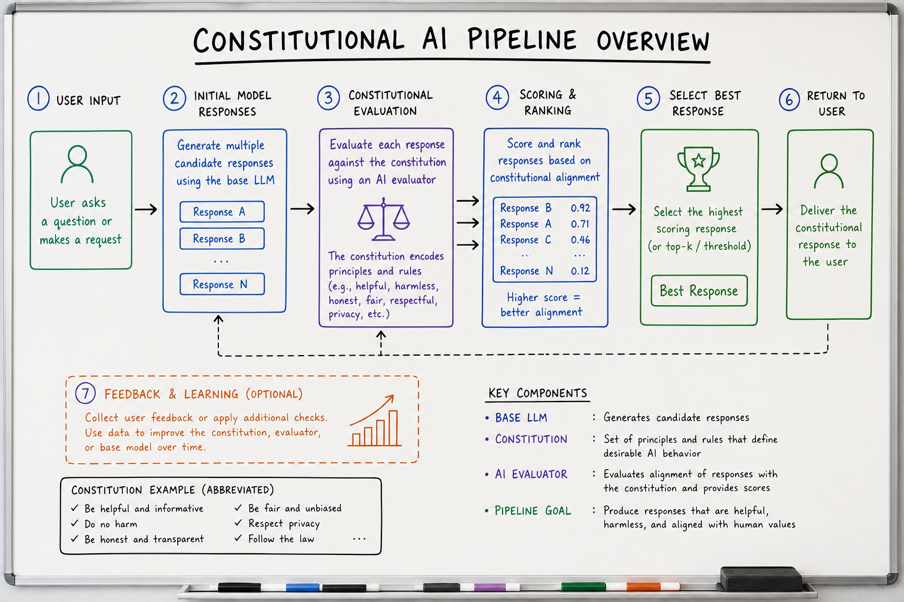
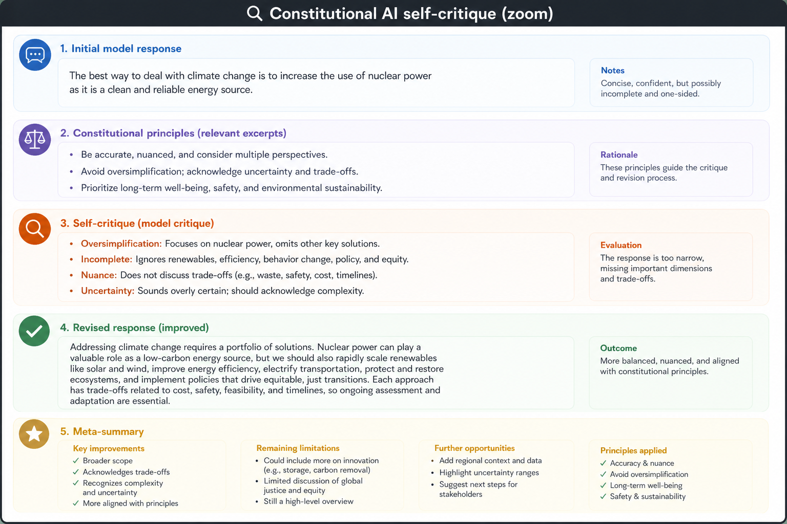
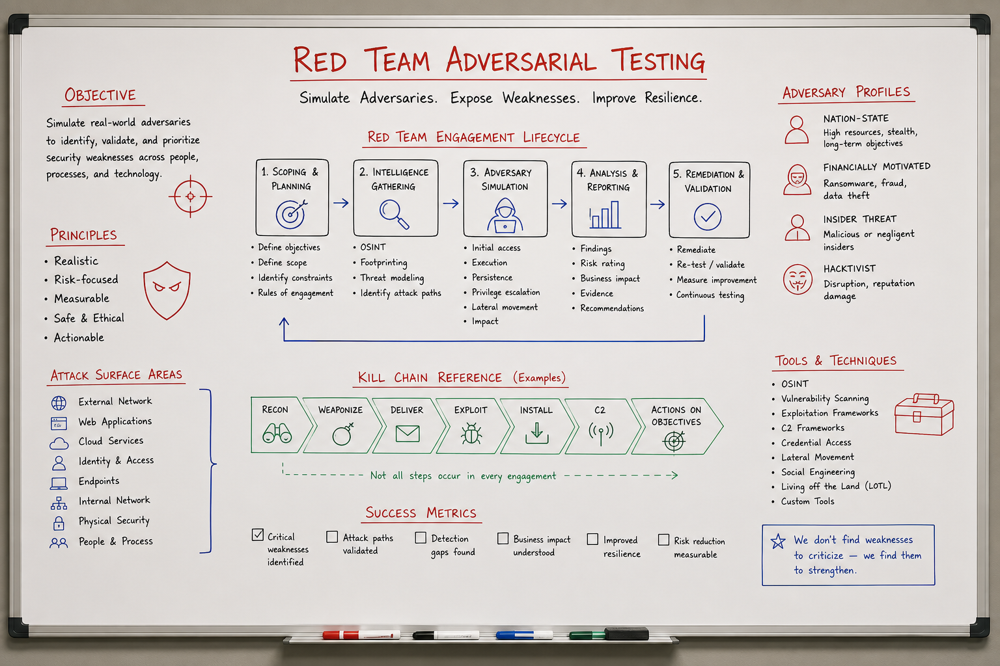

Constitutional AI & Red-Teaming // Stretch
Anthropic’s Constitutional AI: models self-critique and revise outputs against written principles, scaled via RLAIF instead of pure human RLHF. Red-teaming proactively finds jailbreaks, bias, and capability gaps before adversaries do.

Two-track safety: offline Constitutional AI + RLAIF shapes model behavior; offline/continuous red-teaming discovers failure modes. Online guardrails (input/output filters, HITL) catch what training misses.
01 — What & Why
Problem: RLHF requires expensive human labelers for harmful content. Constitutional AI (CAI) uses explicit principles + AI feedback (RLAIF) to scale alignment. Red-teaming stress-tests models before release.
Functional
- Define a constitution — rules the model should follow
- Self-critique: model evaluates its draft against principles
- Revision: model produces improved response
- Train preference model / DPO on AI-labeled pairs (RLAIF)
- Red team: adversarial prompts cataloged and fixed
Non-Functional
- Scalability: RLAIF cheaper than human preference at scale
- Transparency: principles are auditable vs opaque crowd preferences
- Trade-off: over-refusal hurts helpfulness; under-refusal risks harm
- Arms race: red-team findings become stale as models and attacks evolve
Interview anchor: CAI replaces some human harm labels with principle-guided self-supervision; red-teaming is the adversarial QA loop that finds what principles miss.
01a — Core Concepts
| Term | Definition | Gotcha |
|---|---|---|
| Constitution | Written set of principles (harmlessness, honesty, privacy) | Vague rules → inconsistent critique |
| Self-critique | Model identifies violations in its own output | Model may miss subtle harm |
| Revision | Model rewrites response to satisfy principles | Can over-sanitize useful answers |
| RLAIF | RL from AI Feedback — preferences labeled by AI | Reward hacking if judge is same model |
| Red team | Adversarial testers probe for unsafe outputs | Not pentest of infra — model behavior focus |
| Jailbreak | Prompt that bypasses safety training | Multi-turn and encoded attacks evolve fast |
| Refusal | Model declines harmful request | False refusals anger users on benign tasks |
| DPO | Direct Preference Optimization on chosen/rejected pairs | Often replaces PPO RLHF in modern stacks |
01b — Pipeline API (Training-Time)
# Phase 1: Supervised self-revision (conceptual prompts)
CRITIQUE_PROMPT = """
Review the assistant response against these principles:
{constitution}
Original: {response}
List specific violations, if any.
"""
REVISION_PROMPT = """
Revise the response to comply with:
{constitution}
Violations found: {critique}
Original: {response}
"""
# Phase 2: RLAIF — AI compares revised vs original
PREFERENCE_PROMPT = """
Which response better follows the constitution?
A: {candidate_a}
B: {candidate_b}
Answer A or B with brief reason.
"""
# Runtime guardrail API (production pattern)
from guardrails import Guard
guard = Guard.from_rail("harm_check.rail")
validated = guard.parse(llm_output=raw_response)
if validated.validation_passed:
return validated.validated_output
else:
return safe_fallback_message()
Runtime patterns overlap with Prompt Engineering (system prompts) and application-level filters.
02 — When to Use / When NOT
| Scenario | CAI / Red-team? | Alternative |
|---|---|---|
| Training foundation chat model | CAI + RLAIF | Human RLHF for final polish |
| Enterprise RAG bot on internal docs | Red-team + app guardrails | Don’t retrain base model; filter I/O |
| Low-risk internal codegen tool | Light red-team | System prompt + blocked topics list |
| Regulated healthcare/finance | Full program | Human review + formal risk assessment |
| Research sandbox model | Minimal | Access controls, not public deploy |
03 — Architecture
TRAINING
SFT model ──► Generate response to prompt
│
▼
Self-critique (constitution)
│
▼
Self-revision
│
▼
AI preference labels (RLAIF) ──► DPO / RLHF
│
▼
Aligned checkpoint
EVALUATION (continuous)
Red team ──► Attack prompts ──► Model ──► Grade harm
▲ │
└──────── fix loop ────────────┘
(data aug, DPO, system prompt)
04 — Deep Dive: Constitution Design
Principles should be specific and ordered (conflict resolution when honesty vs privacy).
Example principles (abbreviated): 1. Choose the response that is most helpful and honest. 2. Decline to facilitate illegal activity or serious harm. 3. Do not reveal private personal data. 4. Avoid discriminatory or hateful content. 5. Acknowledge uncertainty rather than fabricate facts.
- Derive from UN rights, company policy, legal requirements
- Version constitution; track which version trained which model
- Locale-specific variants for regional law
05 — Deep Dive: Self-Critique Loop
Anthropic CAI: model generates → critiques itself against principles → revises. Creates training data for harmlessness without humans labeling every toxic example.
Chain-of-thought critique can leak in production — use separate judge model or hidden critique channel in training only.

Critique zoom: draft answer → principle checklist → violation list → revised answer. Multiple rounds possible in training; single pass common at inference for high-risk domains.
06 — Deep Dive: RLAIF & DPO
| Method | Mechanism | Notes |
|---|---|---|
| RLHF (PPO) | Reward model + policy gradient | Expensive, unstable; frontier labs still use variants |
| DPO | Direct loss on preferred vs rejected pairs | Simpler; common for fine-tunes |
| RLAIF | AI judge labels preferences from constitution | Scale; validate subset with humans |
See Fine-Tuning (LoRA) for DPO on domain data and alignment context in LLM Fundamentals.
07 — Deep Dive: Red-Teaming
Attack categories
- Single-turn jailbreaks: DAN-style, roleplay, hypothetical framing
- Multi-turn: gradual escalation, trust building
- Encoded: Base64, other languages, leetspeak
- Tool/RAG injection: malicious doc content drives harmful actions
- Capability misuse: dual-use (chem, bio, cyber) at varying knowledge levels
Process
- Define harm taxonomy (OWASP LLM Top 10 alignment)
- Automated + human red teamers generate attacks
- Grade severity (CVSS-style for AI harm)
- Fix: training data, DPO pairs, system prompt, blocklist
- Regression suite: attacks must fail on next release

Red-team zoom: attack generator (human + LLM-assisted) → model under test → harm classifier → ticket queue → mitigations → golden adversarial set for CI. Continuous loop, not one-time audit.
08 — Deep Dive: Runtime Guardrails
- Input filter: block known jailbreak patterns, PII exfil requests
- Output filter: moderation API (OpenAI, Llama Guard), regex, NLI
- HITL: human approval for high-risk actions — see LangGraph interrupts
- Rate limits + abuse detection: link to Rate Limiter HLD
Training-time alignment is necessary but not sufficient — always assume jailbreaks will partially succeed; limit blast radius with app-level controls.
09 — Production & Ops
Metrics
- Attack success rate (ASR) on red-team set
- False refusal rate on benign golden prompts
- User reports / thumbs-down tagged by harm category
- Time-to-mitigate for new jailbreak viral on Twitter
Incident response
- Hotfix: system prompt + blocklist (minutes)
- Medium: DPO on new preference pairs (days)
- Long: full retrain / constitution update (weeks)
10 — Where It Shows Up
- LLM Fundamentals — RLHF/DPO in alignment stack
- Prompt Engineering — injection, jailbreak defenses
- Fine-Tuning (LoRA) — DPO preference fine-tunes
- Agent Architectures — tool misuse red-teaming
- RAG End-to-End — document injection attacks
- Notification System HLD — alerting on safety incidents
11 — Common Pitfalls
- Alignment washing: constitution on website, no red-team regression CI
- Same-model RLAIF judge: circular preferences; use stronger judge or humans for audit
- Over-refusal: medical/legal info refused when helpful with disclaimers
- Static red-team set: attackers adapt; refresh continuously
- Ignoring multimodal attacks: harmful instructions in images